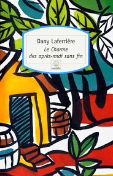
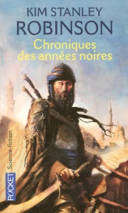
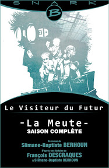

Mes dernières lectures
Vu que ça fait longtemps que je n’ai pas tenu le blog, je dois parler de pas mal de livres pour être à jour au niveau de mes lectures. Je vais les regrouper en un seul article, car j’ai plus ou moins de choses à dire dessus. Je ne prétends pas faire une analyse littéraire de ces ouvrages, seulement donner mon avis dessus. Peut-être que ça vous aidera à savoir si, oui ou non, vous souhaitez vous lancer aussi dans ces lectures. Attention, SPOILERS (peut-être) !
Charlie et la chocolaterie de Roald Dahl
J’ai déjà rapidement parlé de ce roman jeunesse dans un précédent article, mais je ne l’avais pas lu entièrement. Cette fois ça y est. Je connaissais cette histoire par le biais du film de Tim Burton et je dois dire que j’ai retrouvé le même esprit dans le livre. On peut donc déjà commencé en disant que le film est une bonne adaptation du roman.
L’histoire
Charlie est un petit garçon de famille pauvre. Il vit avec sa mère, son père et ses quatre grands-parents dans une minuscule maison. L’hiver est là, les temps sont durs et son père perd son travail à l’usine de dentifrice. Pourtant, ses parents lui offrent une tablette de chocolat Wonka pour son anniversaire.
Il se trouve qu’à ce moment-là, le chocolatier Willy Wonka lance une sorte de concours pour permettre à des enfants de visiter sa chocolaterie. Malgré toute la malchance de sa famille, Charlie finira par y aller et il pourra s’émerveiller de l’audace et des merveilles des confiseries Wonka. Je ne vous révèle pas la fin, elle peut être surprenante et très plaisante. Si vous ne connaissez pas du tout l’histoire, je vous laisse ce plaisir.
Les personnages
Charlie
Il est jeune, pauvre et humble. Il a conscience des difficultés de sa famille et se sent coupable de pouvoir manger du chocolat quand sa mère ne peut plus cuisiner que de la soupe au chou. Il admire Willy Wonka et son travail. Il se laisse souvent bercé par les histoires sur la chocolaterie que ses grands-parents lui racontent avant de dormir. Il ira la visiter avec grand-papa Joe.
Willy Wonka
Chocolatier fou, il vit reclus dans son usine depuis des années à travailler avec des petits personnages farfelus et taquins (les Oompa Loompas) qu’il a ramenés d’un pays exotique et imaginaire où poussent les fèves de cacao. Willy Wonka est très farceur. Intelligent, il passe plutôt pour une sorte de savant fou à cause des expériences loufoques qu’il pratique pour créer de superbes confiseries.
Augustus Gloop, Lavande Beauregard, Veruca Salt et Mike Teavee
Ce sont les quatre autres enfants qui auront le privilège de visiter la chocolaterie avec Charlie. Ils ont chacun obtenu les moyens de la visiter de manière plutôt douteuse et non équitable. Leur particularité les conduit à mal agir et à subir un sort malencontreux au sein de la chocolaterie, les obligeant à partir avant la fin de la visite.
Mon avis
Il s’agit d’une histoire bien agréable à lire, quoique très enfantine. Les sorts réservés aux méchants enfants ne font pas dans la demi-mesure et je crois que ça peut être choquant pour certains jeunes lecteurs. Ceux qui agissent naturellement de manière aussi égoïste ou capricieuse qu’Augustus ou Veruca doivent bien vite refermer le livre en se disant que c’est une histoire pourrie.
Le style d’écriture est simple et peut-être parfois un peu léger. Il s’adresse spécifiquement aux enfants, et c’est dommage.
Le charme des après-midi sans fin de Dany Laferrière
Je ne peux pas dire grand-chose sur ce livre, étant donné que je n’ai pas réussi à le finir. J’en ai lu un bon quart, mais je n’arrive pas à accrocher, ni avec les personnages, ni avec l’histoire.
L’histoire
Pour ce que j’en ai lu, il s’agit de l’histoire d’enfants d’une douzaine d’années qui vont à l’école le matin et vaquent à leurs occupations l’après-midi, à Haïti.
Les personnages
Le narrateur est un jeune garçon qui nous emmène un peu partout et nous présente ses amis, ses voisins et sa grand-mère, qui l’a élevé. Il peut être parfois attendrissant, avec ses anecdotes et ses pensées simples sur les choses.
Mon avis
J’ai du mal à me plonger dans cette histoire parce qu’en réalité, il s’agit de nombreuses anecdotes, toutes mélangées et amenées au gré des mouvements et activités du narrateur. Je trouve qu’il est difficile à suivre, ce petit. On passe de la vieille, assise sur sa chaise à bascule sur le perron de la maison, à la copine de classe qui est amoureuse de lui et qu’il est obligé de fuir en se cachant pour qu’elle le laisse tranquille.
Je pense qu’il s’agit d’un bon récit de la vie haïtienne d’il y a plusieurs décennies, et que ça vaut le coup de s’y plonger, mais il faut être dans une bonne disposition à la lecture de ce genre d’histoire. Quand j’ai commencé, je n’y étais pas. J’y serai peut-être un jour. Ce n’est pas un livre que je supprime de ma bibliothèque pour l’instant.
Les chroniques de Narnia - Le neveu du magicien de C.S. Lewis
Aimant le genre d’histoire où le héros plonge dans un monde jusque-là inconnu et découvre des choses fantastiques, j’ai toujours voulu lire Le monde de Narnia. Mais je n’avais jamais réussi à l’entamer jusque-là… Ça doit faire une dizaine d’années que j’ai essayé, pour la première fois, de me plonger dans le tome 1, //Le neveu du magicien//, mais l’histoire ne m’intéressait pas. Aujourd’hui, j’y suis arrivée !
L’histoire
La maman de Digory est malade et il est forcé de partir vivre chez son oncle et sa tante, à Londres. Il rencontre alors sa charmante petite voisine, Polly, et ensemble, ils s’amusent à parcourir les maisons du quartier par les tunnels des greniers. Un jour, ils tombent sur l’atelier secret de l’oncle Andrew qui va leur jouer un mauvais tour de passe-passe, les obligeant à partir, à l’aveugle, dans un monde magique, donnant lui-même accès à de nombreux mondes.
Les personnages
Digory
Parce qu’il n’en fait qu’à sa tête et met deux mondes en danger, il devient malgré lui le héros et est forcé de résister à la tentation de sauver sa mère pour pouvoir aider le monde de Narnia.
Polly
Elle est un peu plus réfléchie que Digory, mais ne le laisse pas tomber quand il fait une erreur de jugement. C’est une bonne amie.
L’oncle Andrew
Couard, il n’hésite pas à duper les enfants pour les envoyer tester l’autre monde à sa place. Il se met au service d’une méchante reine uniquement pour être du côté de ceux qui ont le pouvoir. Il est méprisable.
Aslan
C’est un lion qui parle et chante. Il crée le monde de Narnia sous les yeux de Digory et Polly à qui il demande de l’aide pour chasser la reine.
Mon avis
C’est une histoire sympathique, mais pas assez prenante. Je l’ai finalement achevée parce que je savais qu’il y avait une suite et que je voulais en apprendre plus sur le monde de Narnia. J’aime les références à certains éléments qui introduisent la suite. Encore une fois, il s’agit d’une histoire qui s’adresse vraiment aux enfants, et de manière un peu trop simpliste à mon avis. Si vous avez aimé les adaptations cinématographiques du Monde de Narnia et que vous voulez en savoir plus dessus, c’est quand-même bien de lire ce roman.
Chroniques des années noires de Kim Stanley Robinson
Alors là, pour le coup, je ne peux pas dire qu’il s’agit d’un roman qui s’adresse aux enfants et est un peu trop simple. J’ai un mal fou à comprendre ce qu’il se passe ! Je ne l’ai pas encore terminé. Je ne sais même pas si j’irai au bout, c’est pour ça que je vous en parle tout de suite. Je vais essayer de vous résumer ce que j’ai compris jusque-là, mais je ne vous promets rien ! Si vous connaissez ce roman, je ne serais pas contre un petit éclaircissement.
L’histoire et les personnages
Elle se situe aux alentours du XIIIe siècle. Plusieurs empires, dont la Chine, il me semble, se battent pour la conquête de territoires. Un groupe d’éclaireurs atteint une ville ravagée par la Peste noire. Lorsqu’ils retournent prévenir leur chef, celui-ci veut les tuer pour être sûr qu’ils ne ramènent pas la maladie parmi son armée. Ils s’enfuient et sont forcés de se séparer. Nous suivons leur histoire individuelle faite de marche, de faim et de déshydratation; de rencontres inattendues et de changement de vie.
L’histoire est complètement fictive, elle nous présente l’Orient comme intégralement ravagé par la Peste noire. Pourtant, tout semble étonnamment réaliste et bien traité. Si vous ne connaissez pas parfaitement l’Histoire de ces contrées au Moyen-Âge, il y a des chances que vous ayez l’impression de lire un journal d’origine d’époque (comme moi ^^).
Mon avis
Certaines références spirituelles et des descriptions de paysages sont parfaites pour immerger le lecteur dans l’ambiance. Le livre est bien écrit, mais il est très compliqué. Il faut s’accrocher pour suivre l’histoire. Je m’accrocherai un jour, je ne perds pas espoir.
Le ver à soie de Robert Galbraith

Voici la suite des enquêtes de Cormoran Strike, le détective fils de rock star et rescapé de guerre. Pour plus d’informations sur le détective privé, je vous renvoie à mon article sur le tome 1.
L’histoire
Cormoran Strike a une meilleure situation, il enchaîne les enquêtes pas passionnantes du tout concernant des femmes infidèles ou des divorces de personnages influents. Sa secrétaire Robin est toujours là, et elle aspire à plus que répondre au téléphone ou prendre les rendez-vous de son patron. Un jour, une bonne femme un peu bizarre vient leur demander de retrouver son mari, auteur de roman, qui a disparu. Elle n’est pas allée voir la police, car la dernière fois qu’il a disparu, il était avec sa maîtresse et sa femme a eu la honte de sa vie devant la police.
Les personnages
En plus du détective, de la secrétaire et de la cliente, il y a toute une ribambelle de personnages. L’enquête passe vite de la disparition de personne au meurtre et tous ces gais lurons du monde de l’édition passent du statut de témoin à celui de suspects.
Mon avis
L’enquête est intéressante et l’évolution des personnages principaux aussi, mais il y a deux choses qui m’ont agacée dans ce roman :
- le côté « je descends les écrivains qui ne sont pas publiés par de grandes maisons d’édition »
- les révélations en suspens et les indices non révélés qui nous empêchent d’enquêter en même temps que Strike
Premier point
Effectivement, la victime étant un auteur controversé, son dernier livre ne devait pas être publié par sa maison d’édition actuelle et il avait l’intention de le proposer sur internet. Nous avons alors droit à toute une critique (non élogieuse bien sûr) sur tous ces gens qui se croient écrivains, qui publient leurs textes en ligne et qui attendent des louanges; sur tous ces manuscrits reçus en maison d’édition, mais tellement indigestes qu’ils ne sont même pas bons à servir de papier brouillon. Bref, le monde de l’édition dépeint l’auto-édition comme de la nioniotte, le détective n’a pas son avis dessus et les personnages qui pourraient en parler parce qu’ils s’y prêtent, ne disent rien.
Je ne sais pas si l’auteure (je rappelle : Robert Galbraith = J.K. Rowling) critique réellement ce mode de publication et l’ambition des écrivains ou si elle a voulu en parler de manière satyrique. En tout cas, l’effet dérangeant est présent et ça la rend assez prétentieuse en fait. Pour moi, c’est un gros point noir de l’histoire !
Deuxième point
Le détective comprend des choses ou trouve des indices, mais il ne les partage pas forcément avec nous. Il tourne et retourne des phrases dans sa tête, mais ne nous dit rien. Bref, il dispose de plus d’éléments que nous, si bien qu’on ne peut pas enquêter avec lui et qu’il trouve la solution vingt chapitres avant nous. C’est dommage, car le plaisir de lire un polar, c’est de pouvoir résoudre l’enquête aussi.
Le livre est quand-même bon, attention, je ne dis pas le contraire. Je lirai la suite des enquêtes de Cormoran Strike sans hésiter parce que les histoires peuvent être passionnantes et que les personnages sont attachants !
Le Visiteur du futur - La Meute de Slimane-Baptiste Berhoun (supervisé par François Descraques)
Je garde le meilleur pour la fin… Alors là, c’est un roman vraiment excellent. Pour lire La Meute, il faut d’abord regarder la Web-série Le Visiteur du futur de François Descraques. Le roman raconte la dernière saison des aventures du Visiteur et de ses amis, qui essayent de sauver le monde d’un avenir terrible.
L’histoire
Dans la série, l’histoire commence par l’intervention du Visiteur du futur auprès de Raph afin de l’empêcher de lancer une canette de soda qui provoquera une catastrophe dans le futur.
Avec l’aide du docteur Henry Castafolte, un robot, le Visiteur et Raph vont, au fil des saisons et de nombreux rebondissements improbables, tenter de sauver le monde. L’intrigue du roman se situe à l’époque du Visiteur, en 2250 (si je ne me trompe pas) et nous plonge dans les souvenirs de Renard, alias le Visiteur.
Les personnages principaux
Renard alias le Visiteur
Petit, il se débrouille seul dans un monde désolé jusqu’à ce que les enfants de la Meute le trouvent et le conduisent au Maître. Il intègre la Meute et se fait appeler Renard parce qu’il est futé. Il grandit en espérant rejoindre un jour l’Autre Monde, terre promise aux enfants par le Maître. Un jour, après tout un tas d’évènements que je ne vous raconterai pas ici, il quitte la Meute. Plus tard, il rencontre le docteur Castafolte grâce à qui il peut commencer à voyager dans le temps pour remonter à la source des catastrophes mondiales.
Henry Castafolte
C’est un robot de la série des castafoltes qui a réussi à surmonter son bug de programmation : il a conscience d’être un robot. Il a rencontré le Visiteur dans une prison nécrophile (oui, ce monde est tout à fait étrange !) et l’aide dans ses missions. Il aime porter la moustache, même si elle est fausse (puisque c’est un robot ^^).
Raph
Il est le compagnon un peu simplet qui rejoint l’aventure sans avoir rien demandé. Harcelé par le Visiteur au début de la série, il est au cœur d’un enchaînement d’évènements dramatiques pour l’avenir. Dans le roman, il soutient le docteur et le Visiteur dans leur mission.
Mon avis
Le roman est parfaitement mené. L’humour et le côté décalé de la série sont omniprésents, on retrouve tous les traits de caractères des personnages et la suite est logique par rapport à la dernière saison. C’est super de découvrir l’enfance de Renard et de comprendre ce qui l’a amené à faire ce qu’il fait. C’est une histoire trop rigolote qui s’adresse à tout le monde. Même la vulgarité dans les propos des personnages ne parait pas vulgaire. La fin est digne d’une fin de saison du Visiteur du futur et on a eu notre lot d’émotions fortes au fil de l’histoire. Je recommande ! Je recommande la série et le livre. C’est original comme tout et vraiment bien pensé. Bravo François Descraques et Slimane Berhoun !
Si vous aimez ce style un peu délirant, ils font d’autres petites choses sympas sur le net (La théorie des Balls notamment).
Et voilà pour les lectures de ces… trois ou quatre derniers mois (oulà, ça fait longtemps !) Si vous avez lu ces romans, ou si vous avez l’intention de les lire, faites-moi signe ici ! En attendant, bonnes lectures et bon fun à tous ;)